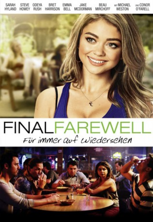
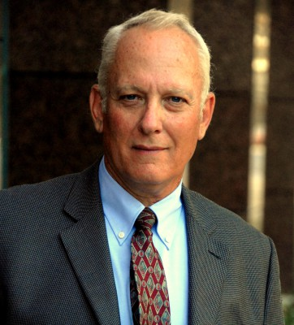

#10834 Final Farewell - Für immer auf Wiedersehen
Alternativ: See You in Valhalla (Englischer Titel)
 
 IMDB-Wertung: 5.4 / 10
IMDB-Wertung: 5.4 / 10  Metascore: 28
Metascore: 28 
Nach dem bizarren Tod ihres Bruders kehrt Johana Burwood nach vier Jahren nach Hause zurück. Dort wird sie prompt mit ihrer schrulligen Familie, darunter ihrem entfremdeten Vater, ihren zwei konkurrierenden Brüdern Don und Barry sowie ihrem verflossenen Lover konfrontiert. Anfangs fühlen sich die einzelnen Mitglieder der Familie noch unwohl und die inneren Konflikte manifestieren sich zu handfesten Streitigkeiten. Johana ist gezwungen, sich mit den Geheimnissen ihrer Vergangenheit auseinanderzusetzen. Als sie dann noch einem Ex-Freund von sich begegnet, der sie augenscheinlich nie losgelassen hat, ist sie vollends verwirrt. Erst als die Emotionen am Überkochen sind, bringt einer der Beteiligten eine Idee ein, mit der sie ihren verstorbenen Bruder würdig verabschieden können.
Jahr: 2015
Dauer: 81 Minuten
FSK: 12
Land: USA Studio: IITonspuren: DTS - ,
Untertitel:
Auflösung: 1080p (1920x808) Größe: 3768 MB
Genre: Drama, Komödie
Regisseur: Jarret Tarnol
Drehbuch: Brent Tarnol
Soundtrack:
Darsteller:
 Sarah Hyland als Johana Burwood
Sarah Hyland als Johana Burwood- Bret Harrison als Barry Burwood
 Steve Howey als Makewi
Steve Howey als Makewi Odeya Rush als Ashley Burwood
Odeya Rush als Ashley Burwood Jake McDorman als Magnus Burwood
Jake McDorman als Magnus Burwood- Alex Frost als Peter
 Emma Bell als Faye
Emma Bell als Faye Beau Mirchoff als Johnny
Beau Mirchoff als Johnny- Allie Gonino als Tori
 Michael Weston als Don Burwood
Michael Weston als Don Burwood-  Conor O'Farrell als Woody Burwood
- Christopher T. Wood als Doctor
- Amanda Holquin als ICU Nurse
- Ryan Pinkston als Pauly Paparazzo
- Elizabeth Small als Teenage Girl
- Jack Briggs als Tony the Drunk
- Lauryn Morse als Nurse
 David Cohen als Paparazzi
David Cohen als Paparazzi- Edgar Roche als Paparazzi
- Karli Klein als Hospital Patron
- Jack Michael Doke als Hunter (uncredited)
- Jamie Wozny als Jamie Tanner
- Ariston Green als News Reporter
- Orion Green als Hunter
- Lauren Cook als Interviewed Girl
- Michael Falso als Coffee Shop Guy
- Josh Adell als Josh Cohen
- William Will Daubert als Doctor #2
- A.J. Wartinger als Paparazzi
- Andrew Mabry als Paparazzi
- Alec Justin Henderson als Paparazzi
- Maxie Solveig als Bartender
- Joseph Lewis Hemming als Bar Patron
- Krystie Castro als Bar Patron
Datei: X:\2015(A-F)\Final Farewell - Für immer auf Wiedersehen (2015, FSK12, 1920x808).mkv seit 09.03.2019
Festplatte: HD 2015(A-Z)
 Es gibt insgesamt 143 Filme in der Gruppe '2015(A-F)'
Es gibt insgesamt 143 Filme in der Gruppe '2015(A-F)'